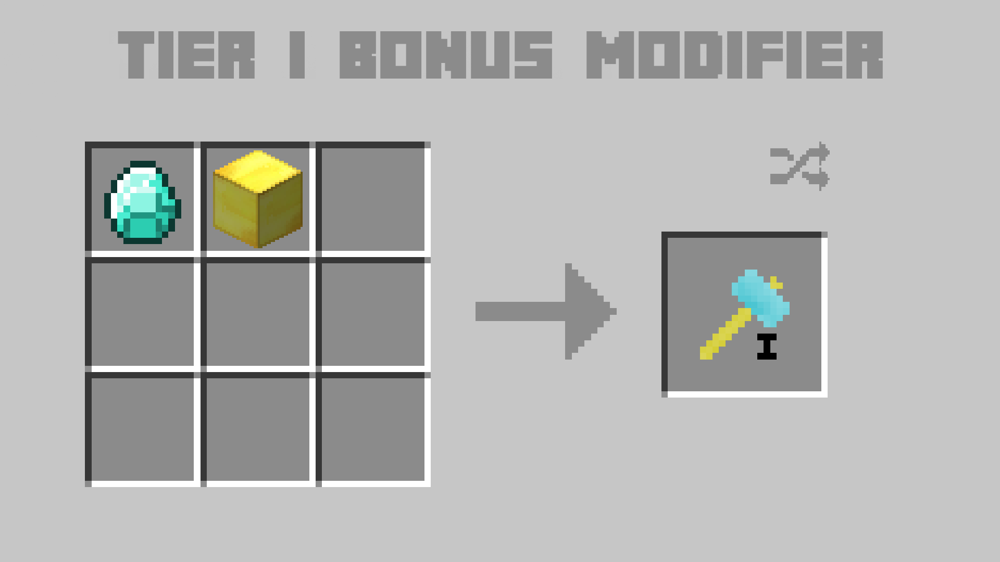
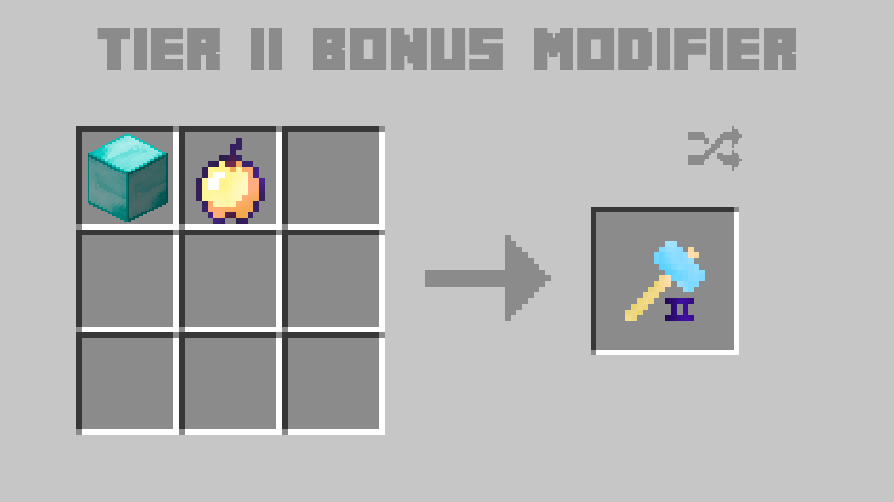
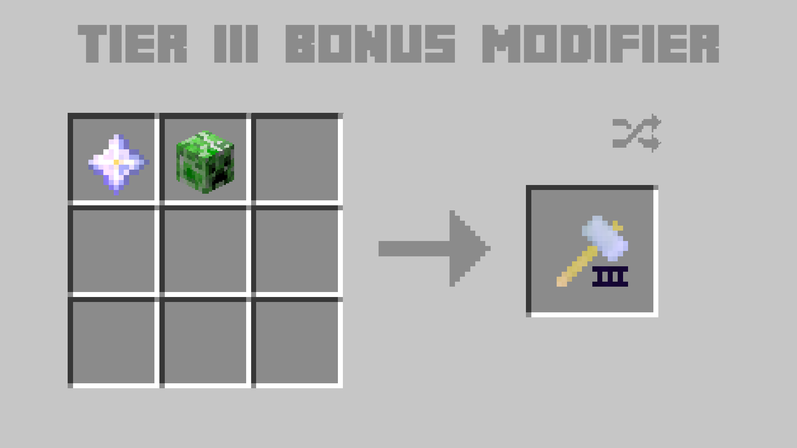
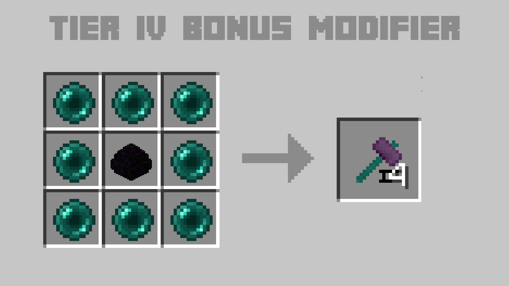

In the event you just want a linear, craftable method of getting extra modifiers for that little bit of haste, this is the mod for you!
Each recipe varies per-tier:




Amelioration
Added specifically to quell the complaints that tool repair in Tinkers' Construct 2 was too slow. While I now feel that Mending Moss is a more fun solution, Amelioration aims to let you leave your XP worries behind!